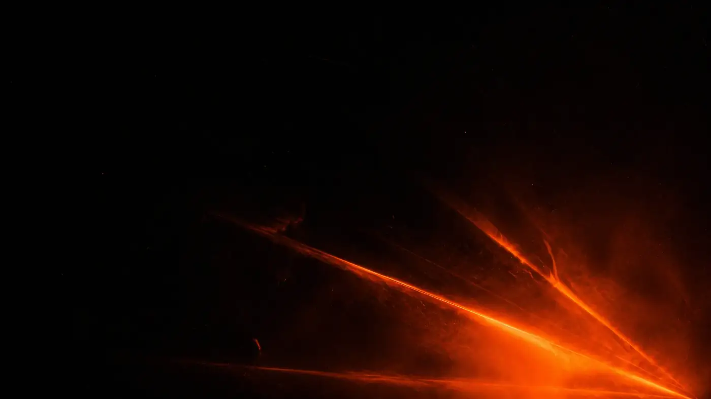

Collettivo bass music — Venezia / Pordenone
NEW
WAVES.
Jungle — Drum & Bass — Dubstep
01 — Il collettivo
Bass music.
Zero gerarchie.
New Waves Underground Movement è un collettivo di bass music orientato su jungle e drum & bass, attivo tra Venezia e Pordenone.
Djambe, Dema, Coce, Marsiattack e Damnspark portano il proprio concept di sound e visual al CS Rivolta di Venezia e all'Astro Club di Pordenone, con numerose chiamate in tutto il territorio.
Chi siamo02 — I membri · 5 teste, nessuna gerarchia
Cinque teste.
03 — Prossimo evento
Prossima data.
04 — Progetti
Progetti.
Format
Bass Files
Interviste e dj set dedicati alla scena, in collaborazione con Drum And Bass Italia.
Residenza artistica
Radio Ombra
Radio indipendente con base al Chet, locale storico di Venezia.
Festival — in arrivo
Mountain Waves
Il festival organizzato dal collettivo.
05 — Ascolta
Ascolta.
06 — Booking
Portaci
nel tuo posto.
Formazione variabile: la lineup di ogni data si conferma in fase di booking.